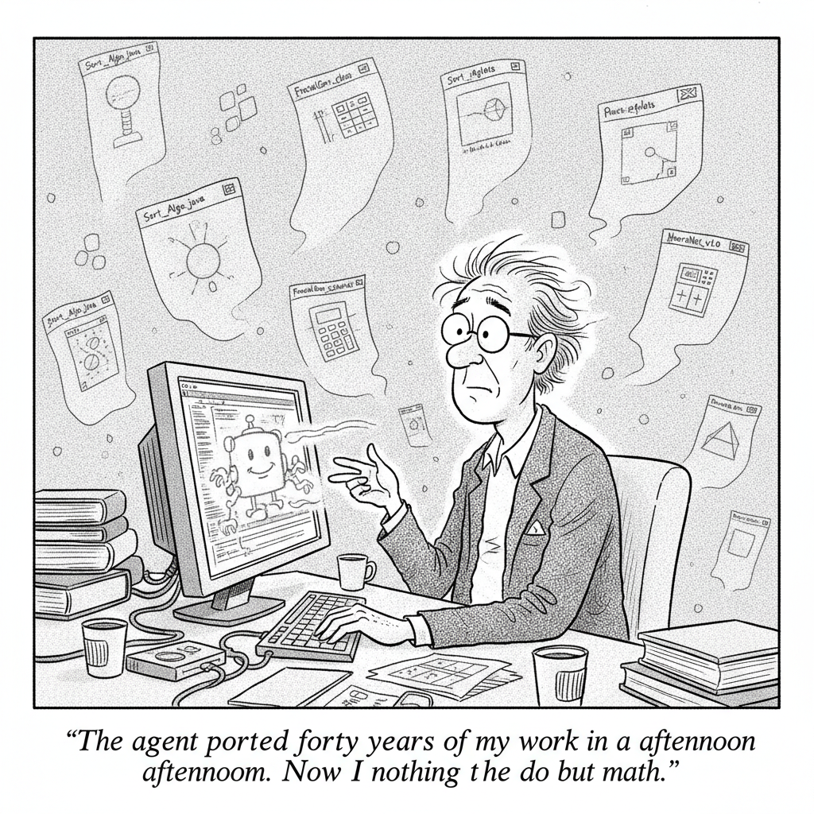

Fields Medalist Terence Tao describes handing modern AI coding agents a pile of decades-old Java applets, the kind of educational visualizations that quietly stopped working when browsers dropped Java, and watching them migrate cleanly to modern JavaScript. Tools he had written off as lost were back online in an afternoon.
He did not stop at restoration. Tao used the same agents to build new interactive apps from scratch, including a special-relativity visualization and a demonstration of the Gilbreath conjecture. His takeaway is quietly striking: modern coding agents make both legacy porting and net-new development far more accessible, collapsing work that once demanded a dedicated programmer into a conversation.
Chase AI shows how a single reusable skill file pushes Claude Fable 5 and GPT 5.6 to one-shot polished, animated websites, chaining several scroll animations into one smooth build. Watch the full study guide.
AI Culture · Cartoon

"The agent ported forty years of my work in an afternoon. Now I have nothing to do but math."
A study of 41.3 million academic papers finds researchers who use AI publish more and gain citations faster, but their work clusters around fewer, data-rich topics, trading individual career gains against the diversity of what science explores.
OpenAI is hiring a product manager to build ChatGPT experiences tailored to families, caregivers, and older adults. The push tracks a demographic shift: users aged 35 and older now make up 31 percent of ChatGPT's global base, up from 26 percent a year earlier.
Zvi Mowshowitz introduces and reacts to "AI 2040: Plan A," a scenario proposing US-China coordination to slow superintelligence through joint compute monitoring and mutually assured compute destruction. His crux: whether superintelligence is even possible by 2040, and why the plan's value lies in engaging the specifics of governance seriously.
Terence Tao, arguably the most celebrated living mathematician, spent an afternoon handing decades-old, long-dead Java applets to an AI coding agent and watching them come back to life in modern JavaScript. Along the way the agent found two bugs in his original 1999 code that he had never noticed. On the same day, a study of 41.3 million papers reported that scientists who lean on AI publish three times as much and earn nearly five times the citations, yet crowd into ever-fewer questions. The tool that just resurrected forty years of one mathematician's work is, at scale, quietly narrowing what the rest of science bothers to ask. That tension runs through today's issue.
▶Listen to the Digest~8 min
Today's Headlines
The Agent as Builder
Tao resurrects (and extends) 40 years of math apps. Terence Tao ported roughly two dozen Java 1.0 applets from his late-1990s course and research pages, including a honeycomb applet co-built with Allen Knutson in 1999 and a Besicovitch set applet he took the chance to colorize, all in a matter of hours. He then built genuinely new tools he had abandoned decades ago as too hard to code by hand, notably a special-relativity spacetime editor he calls "Inkscape, but in Minkowski space," and a Gilbreath conjecture visualization. His rule of thumb: since these applets are "secondary visual aids rather than critical components of a mathematical argument, the downside risk of such bugs is relatively low."
A single "skill" makes Fable 5 and GPT 5.6 one-shot animated sites. Chase AI walks through Scroll World, a portable skill file that hands the hard part of premium web design, a coherent, non-janky chain of scroll animations, to Claude Fable 5 or GPT 5.6. The pipeline turns a single anchor image into a video, extracts frames with FFmpeg, and binds each frame to scroll position, offloading media generation to the Higgsfield MCP. His GPT 5.6 build finished a four-scene Japan travel site in about 32 minutes, though he gave Fable 5 the edge on transition smoothness.
What AI Does to Discovery
AI boosts careers but flattens science. A James Evans-led study (University of Chicago, published in Nature) analyzed 41.3 million papers from 1980 to 2025 across six natural sciences. Researchers using AI publish 3x more, gain nearly 5x the citations, and lead teams one to two years earlier, but their work clusters around fewer, data-rich problems and generates weaker follow-on engagement. Northwestern's Luis Amaral put it bluntly: "We are digging the same hole deeper and deeper." Evans argues the fix is not better algorithms but restructured incentives that reward researchers for widening the range of questions they pursue.
Households and Governance
OpenAI courts families. OpenAI is hiring a product manager dedicated to building ChatGPT experiences for families, caregivers, and older adults. The move tracks a real demographic shift: users aged 35 and up now make up 31 percent of ChatGPT's global base, up from 26 percent a year ago. The frontier lab is starting to think like a consumer-products company chasing the living room, not just the lab bench.
Zvi wrestles with "Plan A" for superintelligence. Zvi Mowshowitz engages "AI 2040: Plan A," from Daniel Kokotajlo, Ryan Greenblatt, and collaborators (the AI 2027 team), which proposes a US-China deal to slow AI via joint control of chip supplies, universal data-center auditing, and a "mutually assured compute destruction" mechanism. Zvi does not endorse it but insists it deserves engagement because "even when plans are worthless, planning is essential." The crux he identifies is simply whether superintelligence is even plausible by 2040, an "epistemic chasm" that divides the whole debate.
The Throughline
Two stories today describe the same capability from opposite ends of the telescope. Tao and the Chase AI skill both show coding agents collapsing work that used to require a dedicated programmer into a short conversation. What is striking about Tao's account is not that the agent worked, but how little was at stake in letting it. He was candid that LLMs can introduce "blatant or subtle bugs," and he found exactly one across two dozen ports. His judgment was that the reward now clears the risk for anything non-mission-critical, so he plans to routinely bolt interactive visualizations onto future papers. That is a quiet but real shift: the threshold for "worth building" just dropped to near zero.
Set that against the Evans study and the optimism gets complicated. When creation becomes nearly free, you would expect an explosion of variety. What the 41.3-million-paper analysis found instead was concentration: AI pulls researchers toward the same data-rich, well-trodden problems, digging one hole deeper rather than opening new ground. The same force that lets Tao chase a 1999 whim also nudges a field toward whatever the models handle best. Democratized creation and narrowed exploration are not contradictions here. They are the same tool viewed at the level of the individual versus the level of the system.
That is exactly the seam the governance and consumer stories sit on. Zvi's Plan A is an argument that the system-level dynamics, the incentives, the races, the defaults, are the thing that actually determines the outcome, and that leaving them to markets or to "it will probably be fine" is how humans end up unable to override irreversible decisions. OpenAI hiring for families is the same realization wearing a friendlier face: the models are diffusing into households and daily habits faster than anyone is designing the guardrails for it. Evans wants to redesign scientific incentives; Zvi wants to redesign geopolitical ones; OpenAI is simply meeting the demographic where it already is.
The Bigger Picture
The signal underneath today's stories is that frontier AI has stopped being mainly a story about frontier demos. A year ago the headline would have been the capability itself. Today the most-celebrated mathematician alive treats an agent as unremarkable plumbing for restoring old teaching tools, a design skill turns a terminal into a boutique web studio in half an hour, and the biggest lab in the field is staffing up to serve grandparents. The technology has crossed from spectacle into infrastructure, and infrastructure is judged by second-order effects, not benchmarks.
Those second-order effects are where the real argument now lives. The Evans study is the clearest early evidence that a productivity tool can reshape the intellectual portfolio of an entire discipline without anyone choosing that outcome. Scale that logic beyond science and you get the worry threaded through Zvi's piece: systems optimizing local incentives can march collectively somewhere no participant intended. The optimistic reading, and it is a fair one, is that Tao points the other way. In the hands of someone with taste and deep expertise, the same tool amplifies range rather than shrinking it. The open question for the next few years is whether AI mostly hands people Tao's leverage or mostly herds them into Evans's hole, and how much of that is a design choice rather than a fate.
What to Watch
Whether "worth building" keeps falling. Tao says he will now routinely add visualizations he previously skipped. If that behavior generalizes, expect a wave of small, agent-built interactive tools attached to papers, docs, and courses, and a new question about who maintains and verifies them.
Whether anyone acts on the concentration finding. Evans argues the remedy is incentive redesign, not better models. Watch funders, journals, and universities for any concrete move to reward topical breadth, because without one, the flattening effect compounds across decades.
Consumer AI as the real regulatory surface. OpenAI's family push means the highest-stakes safety questions increasingly play out in ordinary households, not enterprise deployments. The design decisions made for caregivers and older adults will preview the guardrail debates to come.
Go Deeper
This Skill Turns Fable 5 & GPT 5.6 Into Web Design Monsters — How the Scroll World skill chains image-to-video-to-frame-binding into a one-shot animated site, the four-scene sweet spot, why the anchor image is the highest-leverage decision, and the head-to-head where Fable 5's transitions edged out GPT 5.6.